winter season, falling between November and March, is enjoyable and mildly cold and recommended as the best time to enjoy the town.Read More
Adilabad
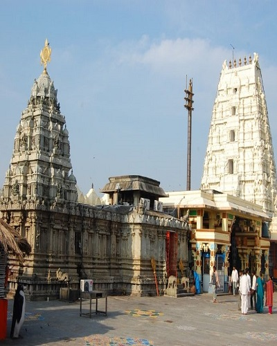
Bhadrachalam
The best time to visit Bhadrachalam is monsoon. The summer season of the place starts from March to June.Read More
Bhadrachalam
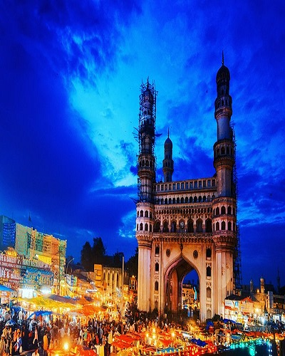
Hyderabad
Hyderabad has a warmer climate and hence cooler months, i.e. October to March are considered ideal to visit the city.Read More
Hyderabad
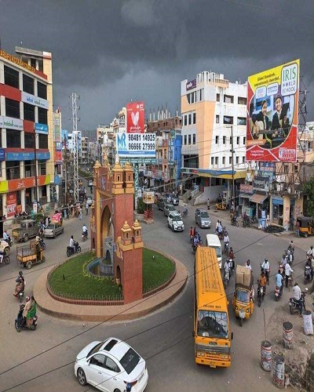
KARIMNAGAR
The best season to visit Karimnagar is the winter season.Read More
KARIMNAGAR
Kbr National Park
Best time to visit, October, November, December, January, February, March, April.Read More
Kbr National Park
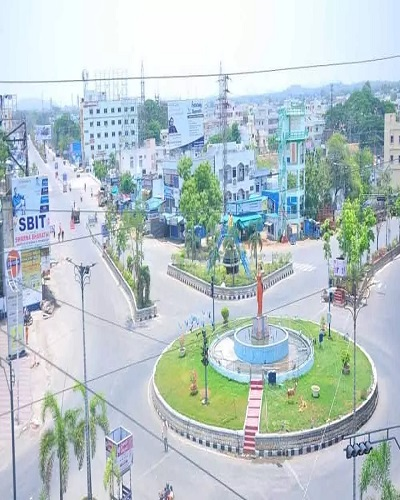
Khammam
Winters falling between the months of October and March are the best time visit as the temperature goes down in the city.Read More
Khammam
Kotilingala Temple
The best time to visit: between July and January. Read More
Kotilingala Temple
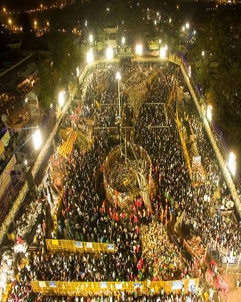
Medaram
Best Time To Visit Medaram - October to February is the most suitable time frame to visit Medaram.Read More
Medaram
Nagarjunasagar
The best months to visit are October, November December, January, February and March.Read More
Nagarjunasagar
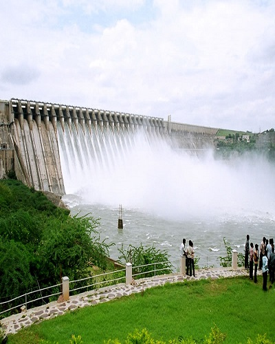
Nalgonda
The months from October - February is a nice time for a visit when the climate is pleasant and the ambience lovely.Read More
Nalgonda
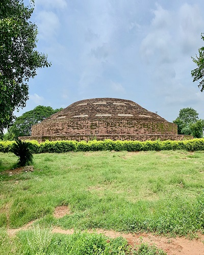
Nelakondapalli
The best time to visit Nelakondapalli is during the winter. In particular, the months of November until February.Read More
Nelakondapalli
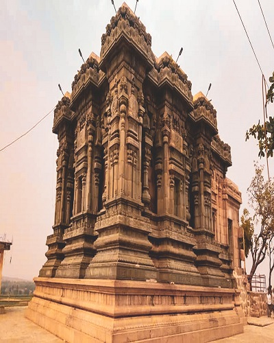
Nizamabad
It is best to visit the place between the months of November and February.Read More
Nizamabad
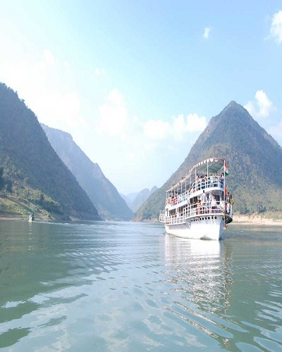
Papikondalu
The best time to visit Papikondalu is from October to January while the Peak Season is from November to December.Read More
Papikondalu
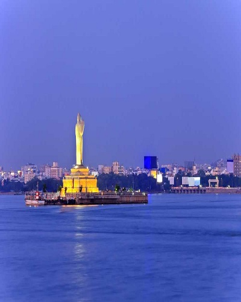
Secunderabad
Winter season is considered as the best time to visit Secunderabad.Read More
Secunderabad
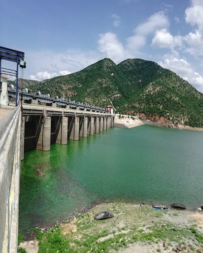
Somasila
The best time to visit Somasila is between October and February. Read More
Somasila
Warangal
The best season to visit the place is from October to March as the weather remains pleasant at this time.Read More
Warangal
Kinnerasani Wildlife sanctuary
The Kinnerasani wildlife sanctuary is one of those places that allures you for a must visit. June- October is considered the best time to visit the sanctuary.Read More